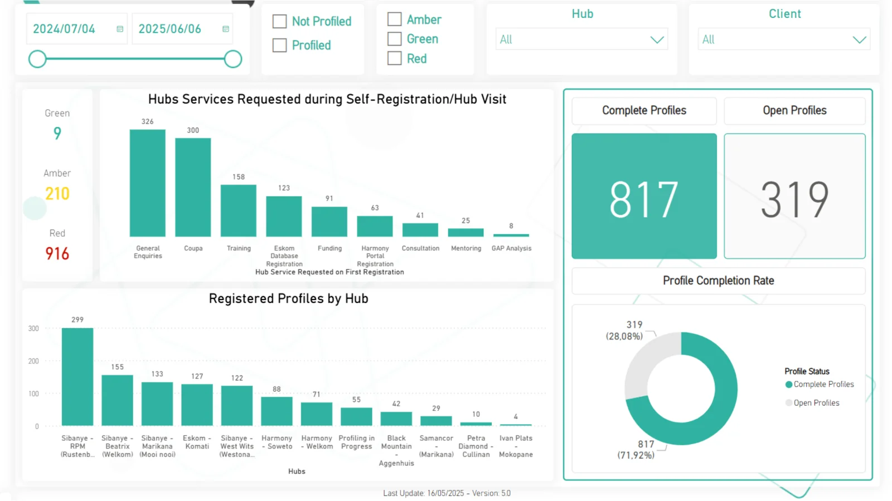

Business apps
SME Profiling Tool
A WordPress and Dataverse application classifies SMEs by maturity and supports monthly client impact reports.

Context
The company relied on Microsoft Forms and Excel to profile SMEs and classify them by business maturity stage (Red, Amber, Green), which limited data quality, scalability, and the ability to generate meaningful insights or monetizable reporting for clients.
Objective
I tasked myself with modernizing the SME profiling process by migrating data from Excel-based workflows into a scalable data platform, improving data capture, classification, and reporting while enabling value-added insights for clients.
My contribution
I designed and implemented the SME Profiling Tool by migrating historical and new data from Excel into Dataverse, replacing Microsoft Forms with a WordPress front end, and structuring SME classification logic to support consistent reporting and analytics.
Outcome
The new system improved data accuracy and analytical depth, enabled the production of monthly impact reports that are billed to clients, and is now actively used as a revenue-generating solution that demonstrates the measurable impact of SME interventions.